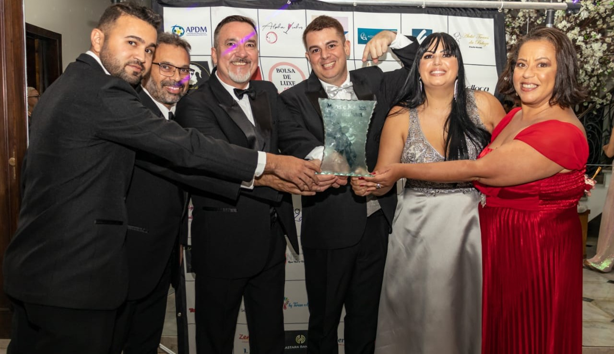

Origem de Fernando Manholér
Fernando Manholér é, antes de tudo, um ser humano que acredita no poder das pessoas. Pai, amigo e companheiro de caminhada, ele cresceu acreditando que ninguém vence sozinho — e que o verdadeiro progresso nasce quando cuidamos uns dos outros.
Trajetória de vida
Com uma trajetória marcada pelo trabalho, pelo respeito e pela fé em um futuro mais justo, Fernando construiu sua vida ouvindo, aprendendo e servindo. Ele conhece de perto as dificuldades enfrentadas por quem luta todos os dias para sustentar sua família, buscar um emprego digno, ter acesso à saúde, educação e segurança.
Mais que um político

Mais do que um candidato, Fernando é alguém que estende a mão, que valoriza cada voz e que acredita no amor como a força transformadora da sociedade. Sua missão é unir pessoas, construir pontes e mostrar que todos nós — independente de origem, cor, gênero ou crença — merecemos dignidade, respeito e oportunidade.
Vida Pessoal
Por trás do nome, existe um homem simples, de coração aberto e cheio de amor pela vida. Fernando é pai dedicado, amigo leal e companheiro de caminhada. A família sempre foi sua base, sua maior inspiração e sua principal motivação para lutar por dias melhores.
Ele cresceu aprendendo que respeito, honestidade e solidariedade são valores que carregamos para sempre. Gosta de estar perto das pessoas, ouvir histórias, compartilhar momentos e celebrar as pequenas conquistas do dia a dia.
Nos momentos livres, Fernando valoriza o convívio com familiares e amigos, gosta de estar em contato com a natureza, refletir sobre a vida e alimentar sua fé em um futuro mais justo.
Quem convive com ele sabe: Fernando é alguém que se importa, que estende a mão e que acredita que cuidar das pessoas é o que dá sentido à vida. 💙
Reconhecimentos

- Fernando Manholér foi homenageado com títulos como “O Homem do Ano” e “O Empresário do Ano”, segundo reportagem da Folha Apostólica News publicada em 12 de março de 2025
- Ele também recebeu uma distinção no “Prêmio Conasep São Paulo”, em sua primeira edição, entregue na Câmara Municipal de São Paulo, conforme o Portal Olhar Dinâmico
- Fernando Manholér é autor de 11 livros, e um deles, “O Plano de Governo”, apresenta um modelo de gestão focado em eficiência, transparência e transformação estrutural do país. Essas informações também foram citadas na Folha Apostólica News
- Além disso, hpublicou um livro intitulado “Do Banco ao Banco”, um sucesso entre leitores e baseado em relatos do seu cotidiano.
- Reportagens adicionais mencionam o título “Homem do Ano rumo a Dubai”, evidenciando seu destaque no mercado financeiro
Prêmios
- O Homem do Ano
- O Empresário do Ano
- Homenagem no Prêmio Conasep São Paulo